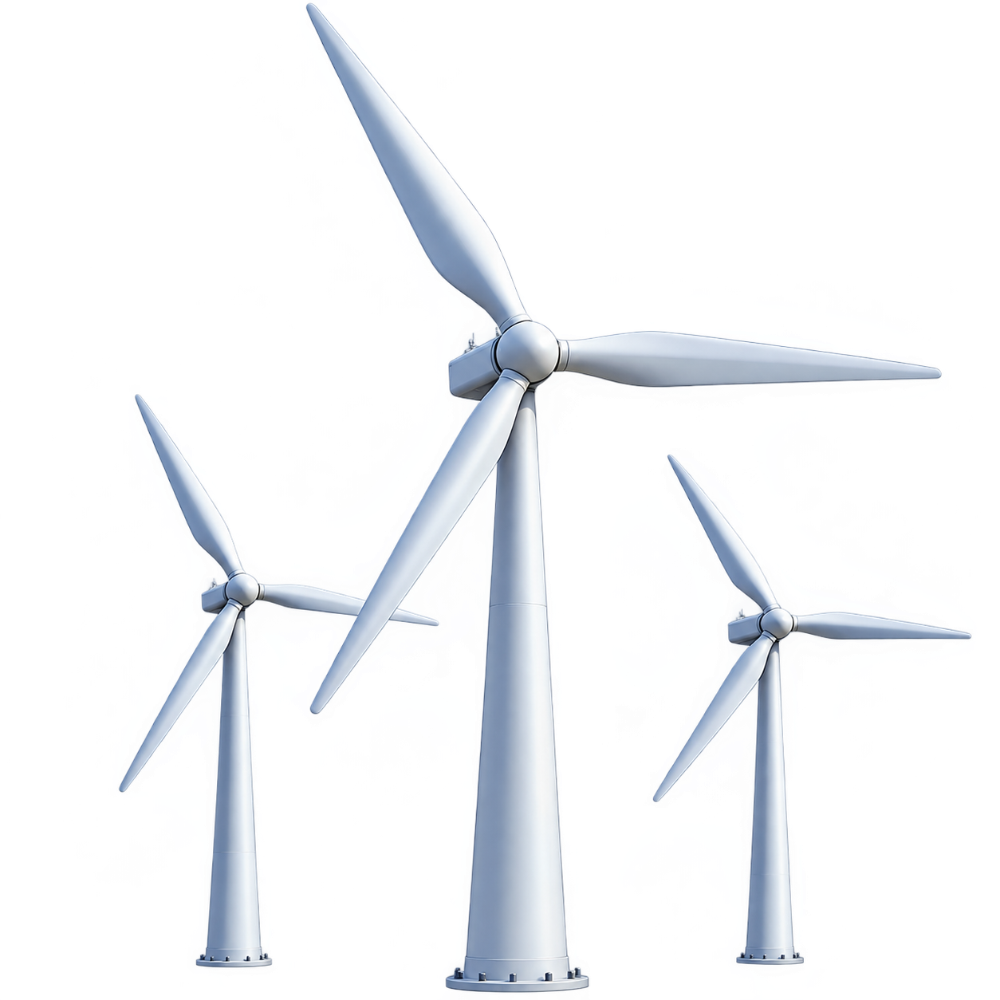
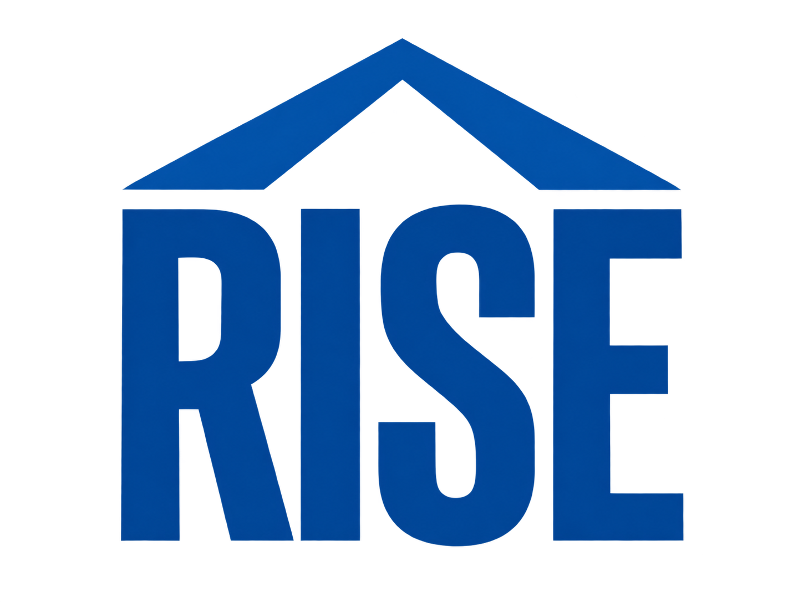

01 / origins
1968
A company
takes shape.
Robert Noyce and Gordon Moore rename NM Electronics to Intel Corporation, laying the foundation for decades of technological innovation.
Intel is founded
02 / the breakthrough
1971
Small chip.
Big change.
Intel debuts the 4004, the world's first commercial microprocessor, igniting a revolution that would put computing into more hands.
The 4004 arrives


04 / a new dimension
1985
More power.
More possibility.
With 32-bit architecture, the 386 ushers in a new era of performance and multitasking for personal computers.
The 386 launches

06 / a shared commitment
2020
RISE to the
challenge.
Intel launches its RISE strategy and 2030 goals for climate action, water stewardship, waste reduction, and inclusive progress.
RISE strategy launches


07 / looking ahead
2022 — 2024
Progress is
a practice.
Intel commits to net-zero Scope 1 and 2 emissions by 2040, reaches 99% renewable electricity worldwide, and brings the industry together at its first Sustainability Summit.
Net-zero operations target